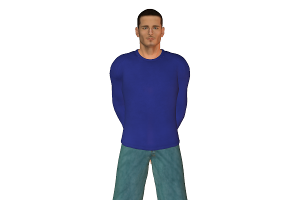
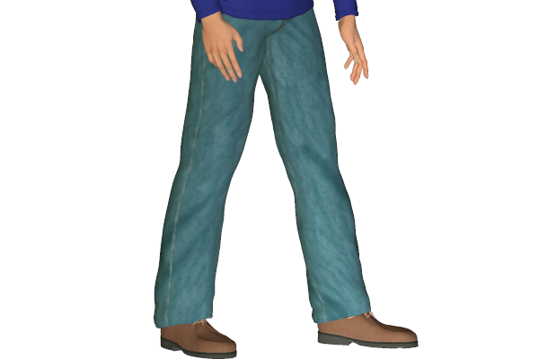

Bookmark added
-
crossed arms with clenched fists
 hostile defensivenessClenched fists inditcate hostility or stubbornness.
hostile defensivenessClenched fists inditcate hostility or stubbornness. -
arms held behind body with hands claspedconfidence, authorityThis kind of a gesture indicates authority.
-
palm(s) up, fingers pointing up
 defensive, instruction to stopAn authoritative instruction to stop whatever act promoted this gesture.
defensive, instruction to stopAn authoritative instruction to stop whatever act promoted this gesture. -
palm(s) downauthority, strength, dominanceThis kind of a gesture indicates stern disagreement.
-
finger pointing (at a person)aggression, threat, emphasisThis is a dictatorial gesture. Commonly someone in a position of authority uses this in a state of anger.
-
finger pointing (in the air)emphasisA gesture used by someone feeling in authority or power.
-
finger wagging (side to side)warning, refusalThis gesture indicates a warning to stop or as a rejection.
-
hand chopemphasis - especially the last word on a matterThis hand gesture is used by someone while trying to end a discussion, as though trying to kill the discussion.
-
palms down moving up and down, fingers spread
 seeking or asking for calm, loss of control of a group or situationThis kind of gesture is used when the person is trying to suppress or calm a situation down.
seeking or asking for calm, loss of control of a group or situationThis kind of gesture is used when the person is trying to suppress or calm a situation down. -
two-fingered V-sign, palm inward (mainly male)offensive - derision, contemptThis is an offensive and aggressive gesture. Usually negatively seen.
-
handshake - palm down
 dominanceUsually a firm handshake when the person who is generally dominiating will have the upper hand.
dominanceUsually a firm handshake when the person who is generally dominiating will have the upper hand. -
handshake with arm clasp
 seeking control, paternalismThis kind of a handshake is like a symbol of control to care. The other person may feel like his personal space is being invaded.
seeking control, paternalismThis kind of a handshake is like a symbol of control to care. The other person may feel like his personal space is being invaded. -
splayed legs, standing
 aggression, ready for actionPeople standing with their legs wide apart, usually unconsciously indicate a defensive posture. This also makes their body look wider.
aggression, ready for actionPeople standing with their legs wide apart, usually unconsciously indicate a defensive posture. This also makes their body look wider. -
foot forward, standingdirected towards dominant group memberIn a group of people the person standing with a foot forward generally seems to be the strongest member or leader of the group.